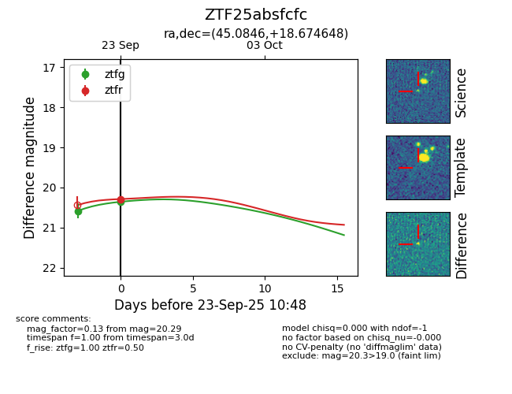
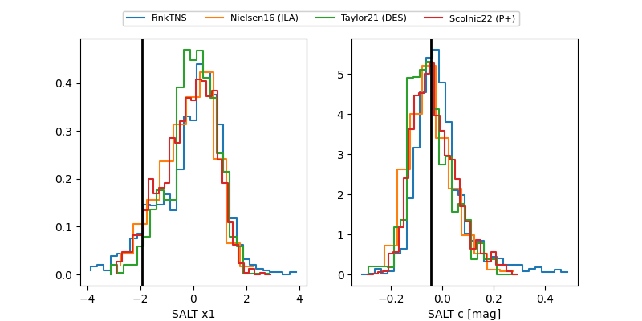

FINK: ZTF25absfcfc
Lasair: ZTF25absfcfc
ALeRCE: ZTF25absfcfc
ZTF25absfcfc (ztf,fink)
equatorial (ra, dec) = (45.0846,+18.67465)
galactic (l, b) = (160.7686,-34.55886)


last ztfg=20.36, ztfr=20.29
2 ztfg, 1 ztfr detections